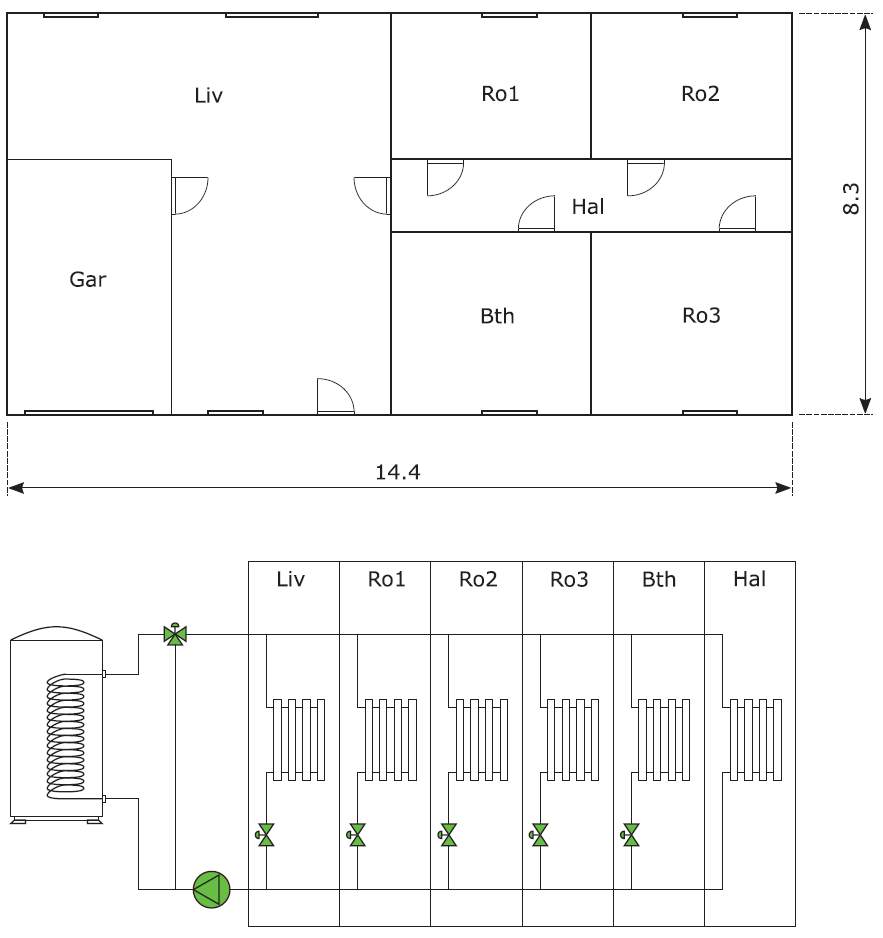

This is the multi zone residential hydronic emulator model of BOPTEST.
The emulator building model represents a residential French dwelling compliant with the French Thermal regulation of 2012, i.e. the French national building energy regulation. Therefore, the typology is defined to be representative of French new dwellings. The area not including the unconditioned attic and unconditioned garage is of 81.08 m². The following figure shows the building layout and a sketch of the hydraulic system. The coloured elements in the scheme represent the controllable components through the BOPTEST interface. The dimensions are provided in metres.

The orientation of each building was chosen to maximize the natural light during winter. Thus, the main surface of windows of the building is south oriented. The building consists of six thermal zones that are actively controlled and two unconditioned zones:
The building envelope was defined in order to cover the new construction modes existing on the market. Thus, each of these modes was characterized by a different level of insulation (Table 1).
Table 1.Building envelope characteristic
|
Characteristics |
External wall |
Brick (200 mm, λ=0.2 W/mK) + polystyrene (80 mm, λ=0.032 W/mK) |
|
|
Floor |
Hollow block (150 mm, λ=0.92 W/mK) + polyurethane (60 mm, λ=0.022 W/mK) |
|
|
Ceiling |
Glass wool (200 mm, λ=0.04 W/mK) |
|
|
Fenestration |
Double glazing with Argon and PVC frame 4/16/4, Planitherm glass g=0.6, TL=76% with external solar protection |
|
These values are in accordance with the French Thermal regulation 2012. The building was subject to a detailed modeling according to the architecture plans. The volume was divided into 8 thermal zones according to space function (an additional thermal zone was created to simulate the behaviour of the attic). Each space (room) has its own thermal behaviour as a result of the boundary conditions (climate, adjacent spaces, etc.) and the internal conditions (internal loads, scenarios, etc.)
The thermal bridges effect is modeled through thermal resistances that are parameterized with the length of the bridge element and a thermal coefficient (k_PT).
The thermal zones of the building, except the unheated zones, are subject to conventional scenarios (occupation, heating, cooling, ventilation, lighting, internal loads) defined in the French Thermal Regulation 2012 (CSTB - Centre Scientifique et Technique du Bâtiment), 2012. Méthode de calcul Th-BCE - Réglementation thermique 2012; CSTB, 2012).
For example, the building is considered occupied continuously by four adults from 19PM to 10AM for 4 weekdays, from 15PM to 10AM during all Wednesdays and all day long during weekends. During the periods that the building is occupied, the occupants are considered to be either all in the living room during day-time, or distributed in their rooms during night-time. There is a short transition period (one hour) on the switching between day- and night-time when the living room and bedrooms are considered to be occupied to half of their nominal capacity each. A reduction of 30% of the internal loads due to occupants is observed during the night-time.
On a yearly basis, the building is considered unoccupied one week at the end of December and two weeks in August.
The building heating temperature setpoint is fixed conventionally at 19°C during occupied periods, 16°C during unoccupied periods shorter than 48 hours and 7°C otherwise. The scenario for cooling is similar, cooling temperature setpoints are 28°C / 30°C / 30°C.
The internal loads considered are mainly due to lighting and appliances. For lighting, approximately 1.1 W/m² are considered according to CSTB - Centre Scientifique et Technique du Bâtiment, 2012 Méthode de calcul Th-BCE - Réglementation thermique 2012; CSTB, 2012, 80% of the 1.1 W/m² installed power is transformed in heat. Appliances contribution to internal loads are considered at a level of 5.7 W/m² from 7AM to 10AM and from 19PM to 22PM for 4 weekdays, 7AM to 10AM and from 15PM to 22PM during all Wednesdays and all day long during weekends. Otherwise, this level is reduced by 80%.
The model uses a climate file containing one year of weather data for Bordeaux, France (FRA_Bordeaux.075100_IWEC.mos). The ground temperature is assumed to be a sinusoidal signal with an amplitude of 2°C oscilating with a yearly period around 15°C.
Each building zone has its own radiator equipped with a thermostatic valve that is modeled using a PI controller. The radiators are sized accordingly to the building envelope characteristics and to the specific climate of Bordeaux, France.
The water through the heating emission system is heated by a gas boiler. The boiler is designed to provide power (sum of the radiators nominal power) for spacial heating only, domestic hot water production is not taken into account in this model.
The building is in cooling mode until March 29th (day 88 of the year), and from October 28th (day 301 of the year). During this period, ideal cooling is considered in all conditioned zones with a PI controller in each zone. This controller provides the cooling thermal power required to comply with the cooling setpoint in every zone.
The boiler uses an efficiency curve constant with coefficient 0.9. The heating system circulation pump uses an efficiency curve that is function of the mass flow rate of water through the emission system. Air cooling is modeled with a constant energy efficiency ratio of 3.
The following set of controllers drive the baseline controller implemented in this model:
The model inputs are:
boi_oveBoi_u [1] [min=0.0, max=1.0]: Boiler control signal for part load ratio
conCooBth_oveCoo_u [1] [min=0.0, max=1.0]: Cooling control signal as fraction of maximum for zone Bth
conCooBth_oveTSetCoo_u [K] [min=283.15, max=303.15]: Air temperature cooling setpoint for zone Bth
conCooHal_oveCoo_u [1] [min=0.0, max=1.0]: Cooling control signal as fraction of maximum for zone Hal
conCooHal_oveTSetCoo_u [K] [min=283.15, max=303.15]: Air temperature cooling setpoint for zone Hal
conCooLiv_oveCoo_u [1] [min=0.0, max=1.0]: Cooling control signal as fraction of maximum for zone Liv
conCooLiv_oveTSetCoo_u [K] [min=283.15, max=303.15]: Air temperature cooling setpoint for zone Liv
conCooRo1_oveCoo_u [1] [min=0.0, max=1.0]: Cooling control signal as fraction of maximum for zone Ro1
conCooRo1_oveTSetCoo_u [K] [min=283.15, max=303.15]: Air temperature cooling setpoint for zone Ro1
conCooRo2_oveCoo_u [1] [min=0.0, max=1.0]: Cooling control signal as fraction of maximum for zone Ro2
conCooRo2_oveTSetCoo_u [K] [min=283.15, max=303.15]: Air temperature cooling setpoint for zone Ro2
conCooRo3_oveCoo_u [1] [min=0.0, max=1.0]: Cooling control signal as fraction of maximum for zone Ro3
conCooRo3_oveTSetCoo_u [K] [min=283.15, max=303.15]: Air temperature cooling setpoint for zone Ro3
conHeaBth_oveActHea_u [1] [min=0.0, max=1.0]: Actuator signal for heating valve for zone Bth
conHeaBth_oveTSetHea_u [K] [min=283.15, max=368.15]: Air temperature heating setpoint for zone Bth
conHeaLiv_oveActHea_u [1] [min=0.0, max=1.0]: Actuator signal for heating valve for zone Liv
conHeaLiv_oveTSetHea_u [K] [min=283.15, max=368.15]: Air temperature heating setpoint for zone Liv
conHeaRo1_oveActHea_u [1] [min=0.0, max=1.0]: Actuator signal for heating valve for zone Ro1
conHeaRo1_oveTSetHea_u [K] [min=283.15, max=368.15]: Air temperature heating setpoint for zone Ro1
conHeaRo2_oveActHea_u [1] [min=0.0, max=1.0]: Actuator signal for heating valve for zone Ro2
conHeaRo2_oveTSetHea_u [K] [min=283.15, max=368.15]: Air temperature heating setpoint for zone Ro2
conHeaRo3_oveActHea_u [1] [min=0.0, max=1.0]: Actuator signal for heating valve for zone Ro3
conHeaRo3_oveTSetHea_u [K] [min=283.15, max=368.15]: Air temperature heating setpoint for zone Ro3
oveEmiPum_u [1] [min=0.0, max=1.0]: Control signal to the circulation pump of the emission system
oveMixValSup_u [1] [min=0.0, max=1.0]: Actuator signal for 0three-way mixing valve controlling supply water temperature to radiators
oveTSetPum_u [K] [min=283.15, max=368.15]: Heating zone air temperature setpoint used to control circulation pump of the emission system
oveTSetSup_u [K] [min=283.15, max=368.15]: Supply water temperature setpoint to radiators
The model outputs are:
boi_reaGasBoi_y [W] [min=None, max=None]: Boiler gas power use
boi_reaPpum_y [W] [min=None, max=None]: Boiler pump electrical power use
conCooBth_reaCoo_y [1] [min=None, max=None]: Cooling control signal measurement as fraction of maximum for zone Bth
conCooBth_reaPCoo_y [W] [min=None, max=None]: Cooling electrical power use in zone Bth
conCooHal_reaCoo_y [1] [min=None, max=None]: Cooling control signal measurement as fraction of maximum for zone Hal
conCooHal_reaPCoo_y [W] [min=None, max=None]: Cooling electrical power use in zone Hal
conCooLiv_reaCoo_y [1] [min=None, max=None]: Cooling control signal measurement as fraction of maximum for zone Liv
conCooLiv_reaPCoo_y [W] [min=None, max=None]: Cooling electrical power use in zone Liv
conCooRo1_reaCoo_y [1] [min=None, max=None]: Cooling control signal measurement as fraction of maximum for zone Ro1
conCooRo1_reaPCoo_y [W] [min=None, max=None]: Cooling electrical power use in zone Ro1
conCooRo2_reaCoo_y [1] [min=None, max=None]: Cooling control signal measurement as fraction of maximum for zone Ro2
conCooRo2_reaPCoo_y [W] [min=None, max=None]: Cooling electrical power use in zone Ro2
conCooRo3_reaCoo_y [1] [min=None, max=None]: Cooling control signal measurement as fraction of maximum for zone Ro3
conCooRo3_reaPCoo_y [W] [min=None, max=None]: Cooling electrical power use in zone Ro3
conHeaBth_reaActHea_y [1] [min=None, max=None]: Actuator signal measurement for heating valve for zone Bth
conHeaBth_reaTZon_y [K] [min=None, max=None]: Air temperature of zone Bth
conHeaLiv_reaActHea_y [1] [min=None, max=None]: Actuator signal measurement for heating valve for zone Liv
conHeaLiv_reaTZon_y [K] [min=None, max=None]: Air temperature of zone Liv
conHeaRo1_reaActHea_y [1] [min=None, max=None]: Actuator signal measurement for heating valve for zone Ro1
conHeaRo1_reaTZon_y [K] [min=None, max=None]: Air temperature of zone Ro1
conHeaRo2_reaActHea_y [1] [min=None, max=None]: Actuator signal measurement for heating valve for zone Ro2
conHeaRo2_reaTZon_y [K] [min=None, max=None]: Air temperature of zone Ro2
conHeaRo3_reaActHea_y [1] [min=None, max=None]: Actuator signal measurement for heating valve for zone Ro3
conHeaRo3_reaTZon_y [K] [min=None, max=None]: Air temperature of zone Ro3
extBth_reaCO2RooAir_y [ppm] [min=None, max=None]: Air CO2 concentration of zone Bth
extLiv_reaCO2RooAir_y [ppm] [min=None, max=None]: Air CO2 concentration of zone Liv
infAti_reaCO2RooAir_y [ppm] [min=None, max=None]: Air CO2 concentration of zone Ati
infGar_reaCO2RooAir_y [ppm] [min=None, max=None]: Air CO2 concentration of zone Gar
infHal_reaCO2RooAir_y [ppm] [min=None, max=None]: Air CO2 concentration of zone Hal
infRo1_reaCO2RooAir_y [ppm] [min=None, max=None]: Air CO2 concentration of zone Ro1
infRo2_reaCO2RooAir_y [ppm] [min=None, max=None]: Air CO2 concentration of zone Ro2
infRo3_reaCO2RooAir_y [ppm] [min=None, max=None]: Air CO2 concentration of zone Ro3
reaHeaBth_y [W] [min=None, max=None]: Heating delivered to Bth
reaHeaHal_y [W] [min=None, max=None]: Heating delivered to Hal
reaHeaLiv_y [W] [min=None, max=None]: Heating delivered to Liv
reaHeaRo1_y [W] [min=None, max=None]: Heating delivered to Ro1
reaHeaRo2_y [W] [min=None, max=None]: Heating delivered to Ro2
reaHeaRo3_y [W] [min=None, max=None]: Heating delivered to Ro3
reaTAti_y [K] [min=None, max=None]: Air temperature of zone Ati
reaTGar_y [K] [min=None, max=None]: Air temperature of zone Gar
reaTHal_y [K] [min=None, max=None]: Air temperature of zone Hal
reaTSetCoo_y [K] [min=None, max=None]: Building cooling air setpoint temperature
reaTSetHea_y [K] [min=None, max=None]: Building heating air setpoint temperature
reaTSup_y [K] [min=None, max=None]: Supply water temperature measurement to radiators
weatherStation_reaWeaCeiHei_y [m] [min=None, max=None]: Cloud cover ceiling height measurement
weatherStation_reaWeaCloTim_y [s] [min=None, max=None]: Day number with units of seconds
weatherStation_reaWeaHDifHor_y [W/m2] [min=None, max=None]: Horizontal diffuse solar radiation measurement
weatherStation_reaWeaHDirNor_y [W/m2] [min=None, max=None]: Direct normal radiation measurement
weatherStation_reaWeaHGloHor_y [W/m2] [min=None, max=None]: Global horizontal solar irradiation measurement
weatherStation_reaWeaHHorIR_y [W/m2] [min=None, max=None]: Horizontal infrared irradiation measurement
weatherStation_reaWeaLat_y [rad] [min=None, max=None]: Latitude of the location
weatherStation_reaWeaLon_y [rad] [min=None, max=None]: Longitude of the location
weatherStation_reaWeaNOpa_y [1] [min=None, max=None]: Opaque sky cover measurement
weatherStation_reaWeaNTot_y [1] [min=None, max=None]: Sky cover measurement
weatherStation_reaWeaPAtm_y [Pa] [min=None, max=None]: Atmospheric pressure measurement
weatherStation_reaWeaRelHum_y [1] [min=None, max=None]: Outside relative humidity measurement
weatherStation_reaWeaSolAlt_y [rad] [min=None, max=None]: Solar altitude angle measurement
weatherStation_reaWeaSolDec_y [rad] [min=None, max=None]: Solar declination angle measurement
weatherStation_reaWeaSolHouAng_y [rad] [min=None, max=None]: Solar hour angle measurement
weatherStation_reaWeaSolTim_y [s] [min=None, max=None]: Solar time
weatherStation_reaWeaSolZen_y [rad] [min=None, max=None]: Solar zenith angle measurement
weatherStation_reaWeaTBlaSky_y [K] [min=None, max=None]: Black-body sky temperature measurement
weatherStation_reaWeaTDewPoi_y [K] [min=None, max=None]: Dew point temperature measurement
weatherStation_reaWeaTDryBul_y [K] [min=None, max=None]: Outside drybulb temperature measurement
weatherStation_reaWeaTWetBul_y [K] [min=None, max=None]: Wet bulb temperature measurement
weatherStation_reaWeaWinDir_y [rad] [min=None, max=None]: Wind direction measurement
weatherStation_reaWeaWinSpe_y [m/s] [min=None, max=None]: Wind speed measurement
For lighting, approximately 1.1 W/m² are considered according to CSTB - Centre Scientifique et Technique du Bâtiment, 2012 Méthode de calcul Th-BCE - Réglementation thermique 2012; CSTB, 2012, 80% of the 1.1 W/m² installed power is transformed in heat.
No shading model is included.
The model uses moist air despite that no condensation is modeled in any of the used components. Also, latent heat gain by occupants is not modeled.
A circulation loop with one parallel branch per zone is used to model the heating emission system.
Mechanical ventilation from outside air and air exchange between zones are considered in the model. The total value of the volumetric airflow exchanged is established according to the French national regulations. Specifically, outside fresh air is infiltrated in the garage and the attic at a rate of 0.5 ACH. In the living room and bedrooms the total infiltrated air is of 113.4 m3/h, which is distributed proportionally to the area of these zones. There is not infiltration considered in the bathroom nor the hallway. 80% of the infiltrated air is exhausted through a fan in the bathroom. This fan is not controllable and its electricity use is neglected. The other 20% of the infiltrated air is assumed to be leaked in the living room.
The CO2 generation in each zone is based on number of occupants in that zone. CO2 generation is 0.004 L/s per person (Table 5, Persily and De Jonge 2017) and density of CO2 assumed to be 1.8 kg/m^3, making CO2 generation 7.2e-6 kg/s per person. Outside air CO2 concentration is 400 ppm. However, CO2 concentration is not controlled for in the model.
Persily, A. and De Jonge, L. (2017). Carbon dioxide generation rates for building occupants. Indoor Air, 27, 868–879. https://doi.org/10.1111/ina.12383.
The Peak Heat Day (specifier for /scenario API is 'peak_heat_day') period is:
The Typical Heat Day (specifier for /scenario API is 'typical_heat_day') period is:
All pricing scenarios include the same constant value for transmission fees and taxes of each commodity. The used value is the typical price that household users pay for the network, taxes and levies, as calculateed by Eurostat and obtained from: "The energy prices and costs in Europe report". For the assumed location of the test case, this value is of 0.125 EUR/kWh for electricity and of 0.042 for gas.
/scenario API is 'constant') profile is:
The constant electricity price scenario uses a constant price of 0.108 EUR/kWh, as obtained from the Engie's "Elec Ajust" deal before taxes (HTT) in https://particuliers.engie.fr/content/dam/pdf/fiches-descriptives/fiche-descriptive-elec-ajust.pdf (accessed on July 2020). The tariff used is the one for households with contracted power installations higher than 6 kVA. Adding up the transmission fees and taxes, the final constant electricity price is of 0.233 EUR/kWh.
/scenario API is 'dynamic') profile is:
The dynamic electricity price scenario uses a dual rate of 0.126 EUR/kWh during day time and 0.086 EUR/kWh during night time, as obtained from the the Engie's "Elec Ajust" deal before taxes (HTT) in https://particuliers.engie.fr/content/dam/pdf/fiches-descriptives/fiche-descriptive-elec-ajust.pdf (accessed on July 2020). The tariff used is the one for households with contracted power installations higher than 6 kVA. The on-peak daily period takes place between 7:00 a.m. and 10:00 p.m. The off-peak daily period takes place between 10:00 p.m. and 7:00 a.m. Adding up the transmission fees and taxes, the final dynamic electricity prices are of 0.251 EUR/kWh during on-peak periods and of 0.211 during off-peak periods.
/scenario API is 'highly_dynamic') profile is:
For the highly dynamic scenario, the French day-ahead prices of 2019 are used. Obtained from: https://www.epexspot.com/en The prices are parsed and exported using this repository: https://github.com/JavierArroyoBastida/epex-spot-data. Notice that the same constant transmission fees and taxes of 0.125 EUR/kWh are added up on top of these prices.
The gas price is assumed constant and of 0.0491 EUR/kWh as obtained from the "Gaz Energie Garantie 1 an" deal for gas in https://particuliers.engie.fr/content/dam/pdf/fiches-descriptives/fiche-descriptive-sommaire-gaz-energie-garantie.pdf (accessed on July 2020). Price before taxes (HTT) for a contracted anual tariff between 0 - 6000 kWh. Adding up the transmission fees and taxes the final constant gas price is of 0.0911 EUR/kWh.
It is used a constant emission factor for electricity of 0.047 kgCO2/kWh which is the grid electricity emission factor reported by the Association of Issuing Bodies (AIB) for year 2019 in France. For reference, see: https://www.carbonfootprint.com/docs/2019_06_emissions_factors_sources_for_2019_electricity.pdf
Based on the kgCO2 emitted per amount of natural gas burned in terms of energy content. It is 0.18108 kgCO2/kWh (53.07 kgCO2/milBTU). For reference, see: https://www.eia.gov/environment/emissions/co2_vol_mass.php